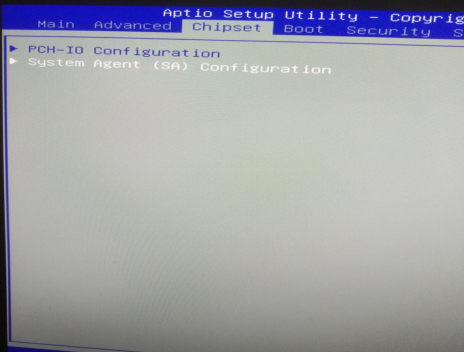
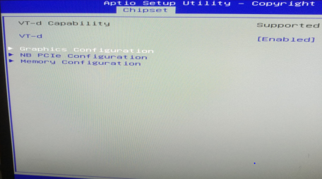
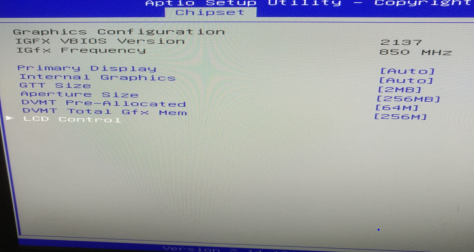
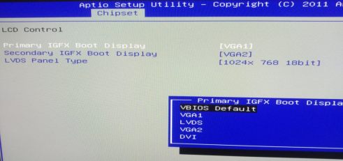
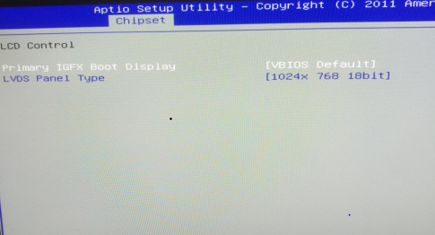
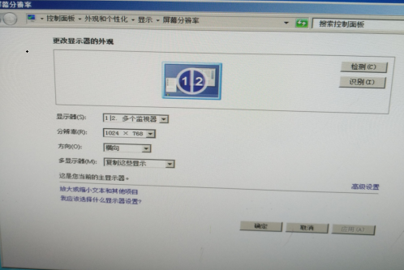
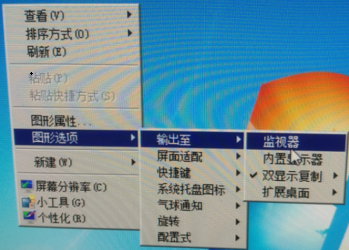
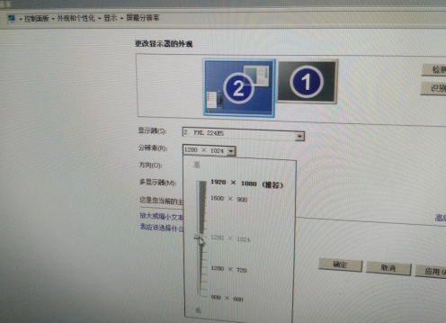

因80XS设备工控机出厂时在BIOS里修改了显示设置导致部分设备出现黑屏现象，现将BIOS还原回默认状态，具体操作步骤如下：
1、先在开启设备后按“Delete”键进入BIOS，通过键盘箭头控制键选择到“Chipset”选项，再选择到“System Agent（SA）Configuration”选项
（如下图）：

再选择到“Graphics Configuration”选项（如下图）：

再选择到“LCD Control”选项（如下图）：

进入此选项后会有第一显示和第二显示，显示的是VGA1、VGA2模式（如下图）：

现将此显示模式更改为默认模式，具体改动“Primary IGFX Boot Display选项将其选项值改为“VBIOS Default”选项，这样就改回显示默认项了，（如下图）：

然后按F4保存退出即可。做完上述修改后进入系统，系统默认显示属性为“双显示复制”模式，桌面显示会不全面，而且显示分辨率为“1024*768”不可调整。此时我们进行第二步修改
2、这里我们需要对显示属性进行修改，在“桌面”右击，选择“图形选项”到“输出至”到“监视器”模式，（这里特别强调一下，一定是调整为“监视器”模式，不能调整为“内监视器”模式）再进入屏幕分辨率设置就可以设置分辨率了，设置完成分辨率屏幕即可正常显示


